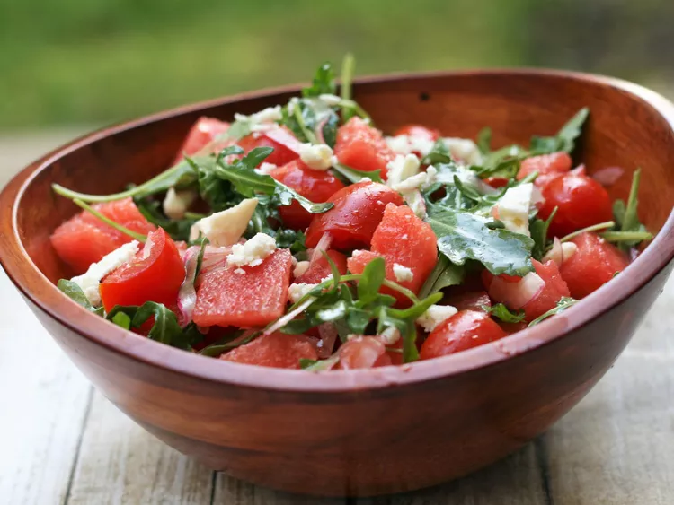

Explore Salad Recipes

Watermelon Feta Salad
Watermelon Feta Salad Broccoli Slaw is a delightful blend of crisp ramen
noodles, fresh broccoli, and a tangy dressing, creating a satisfying and
flavorful salad.
Ingredients
- Ramen noodles (uncooked)
- Broccoli florets
-
Slaw dressing (typically made with a combination of vinegar, oil, sugar,
and seasonings)
-
Optional toppings or mix-ins such as sesame seeds, sliced almonds, or
green onions.
The steps needed for making the Awesome Pasta Salad
- Cook the pasta
- Prepare the vegetables
- Make the dressing
- Combine ingredients
- Add the dressing
- Chill and serve